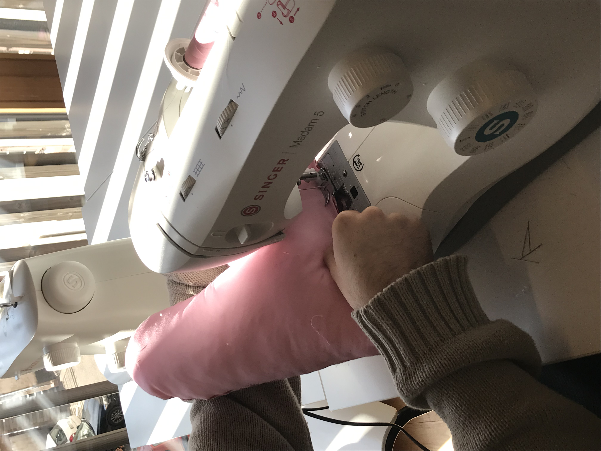

Depuis le mois de septembre, le club couture, mis en place par Cathy Starck, professeure de lettres, s'investit dans le projet Octobre rose. Élèves, personnel enseignant et non-enseignant se réunissent le lundi à 12h45 pour réaliser des coussins qui répondent à des normes très précises : le cœur doit être en polyester et avoir un poids de 170g. Placé sous le bras, il soulage les femmes souffrant du cancer du sein, en particulier après leur opération.
« Il y a différents postes de coupe, d’assemblage et de rembourrage. Les premières semaines ont été dédiées à former des couturiers car la plupart ne savaient pas du tout coudre, il a fallu aussi apprendre le plus rapidement possible le fonctionnement de la machine » explique Madame Starck. En plus du pouvoir antalgique, les élèves ont souhaité un cœur « gai, fleuri et coloré, un produit joyeux » pour apporter du réconfort aux femmes atteintes d’un cancer du sein.
« C’est un beau projet et qui demande aussi de la technique comme pour les angles et les arrondis ». Les élèves comme Eva, Elouan, Loane, Elona et Camille ont trouvé intéressant de développer leur talent de couture pour une bonne cause, de « soulager des personnes malades qui ont souffert », il s’agit d’éviter « les frottements contre la cicatrice ; pour nous c’est important de leur apporter ce bien-être après l’opération ».